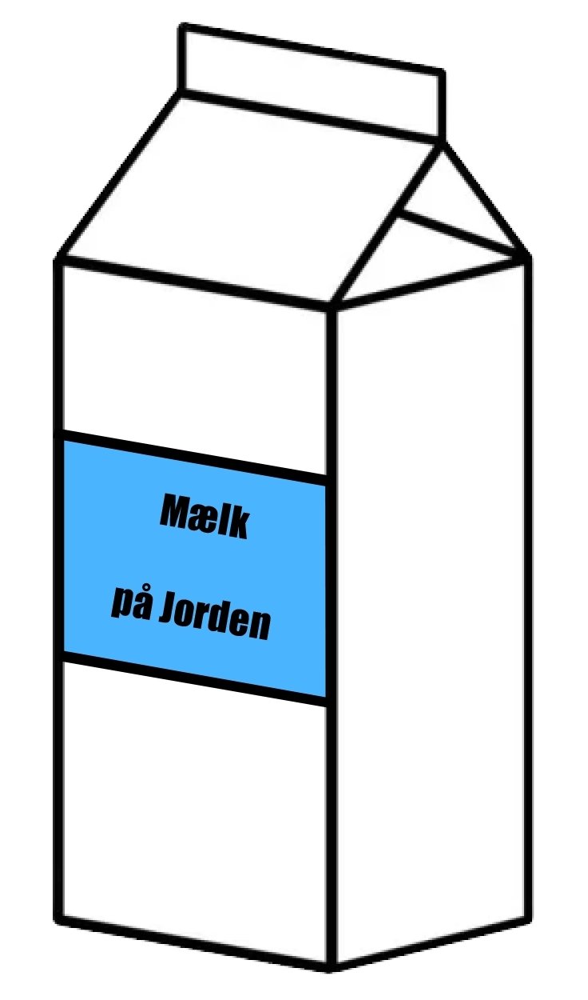
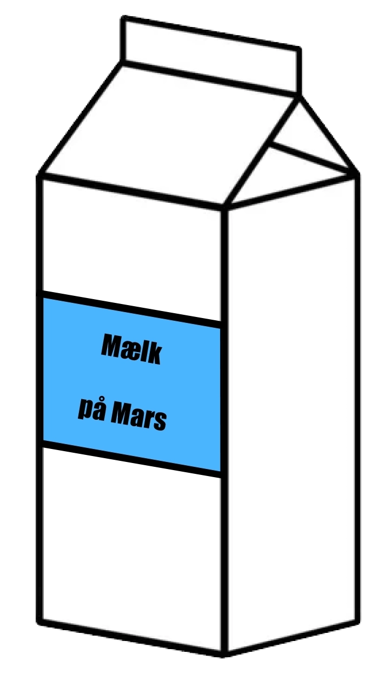
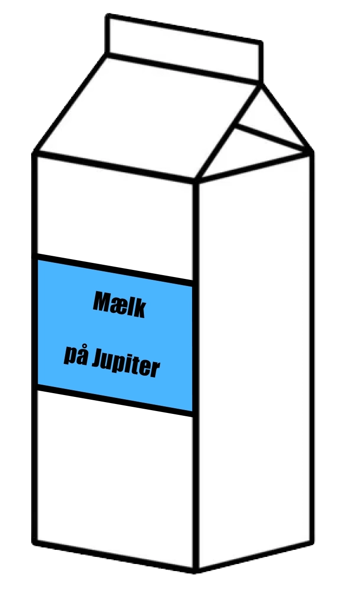

Mælk på Jorden
Vores Reference
- Standard tyngdekraft (1g)
- 1 liter mælk = 1 kg

Mælk på Jupiter
Tyngdekraftens Gigant
- Jupiters tyngdekraft er markant stærkere end Jordens
- Teoretisk set kunne 1 liter mælk veje op til 2.4g på Jupiters "overflade"
- Bemærk: Dette er en forenklet beregning, i virkeligheden ville mælk i flydende form på Jupiter opføre sig ekstremt anderledes

Mælk på Mars
Den Lette Udgave
- Mars' tyngdekraft er kun 38% af Jordens
- En liter mælk der vejer 1 kg på Jorden ville kun veje 0.38 kg på Mars
- Bemærk: Mælkens masse forbliver konstant, kun den oplevede vægt ændres